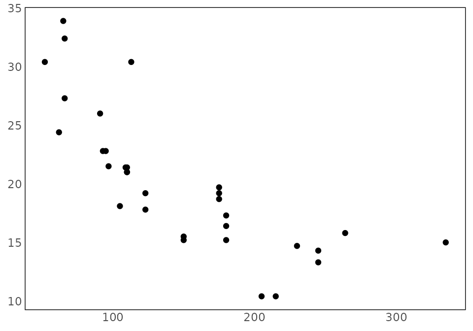

priogridR provides utilities and general spatial
converters for PRIO-GRID. The package delegates grid construction,
configuration, and core raster alignment to the official
priogrid package while providing a consistent
pg_ interface for common input formats.
Grid identifiers
PRIO-GRID identifiers start in the south-western cell and increase
eastward, then northward. The matrix returned by
pg_create_indices() is displayed with the northernmost row
first:
pg_create_indices(nrow = 3, ncol = 3)
#> [,1] [,2] [,3]
#> [1,] 7 8 9
#> [2,] 4 5 6
#> [3,] 1 2 3Neighboring cells
pg_neighbors() returns queen-contiguity neighbors: cells
sharing an edge or corner. Longitude wraps across the antimeridian by
default, while latitude does not wrap across the poles.
pg_neighbors(5, nrow = 3, ncol = 3)
#> [1] 7 8 9 4 6 1 2 3
pg_neighbors(1, nrow = 3, ncol = 3)
#> [1] 6 4 5 3 2For a grid that should not wrap longitudinally, use:
pg_neighbors(
1,
nrow = 3,
ncol = 3,
wrap_longitude = FALSE
)
#> [1] 4 5 2Reproducible data paths
pg_paths() constructs conventional project paths without
changing the working directory:
pg_paths(root = tempdir())
#> $root
#> [1] "/tmp/Rtmpgf3FGb"
#>
#> $raw
#> [1] "/tmp/Rtmpgf3FGb/data/raw"
#>
#> $processed
#> [1] "/tmp/Rtmpgf3FGb/data/processed"
#>
#> $temporary
#> [1] "/tmp/Rtmpgf3FGb/data/temp"Pass create = TRUE when the directories should be
created.
Conversion results
Conversion functions can return:
- a data frame with
return = "data"; - a
terra::SpatRasterwithreturn = "raster"; or - a
pg_resultcontaining data, raster, and metadata withreturn = "result".
Use pg_write_result() to save supported tabular or
raster outputs. See the conversion-workflows vignette for
format-specific examples.
Plot styling
pg_theme() supplies a minimal map-oriented ggplot2
theme:
ggplot2::ggplot(
mtcars,
ggplot2::aes(x = hp, y = mpg)
) +
ggplot2::geom_point() +
pg_theme()